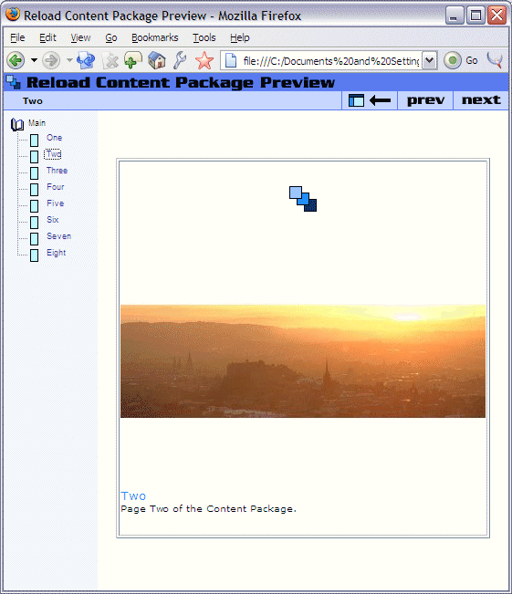

View Content Package
Once all content has been added to the main organization, you are ready to preview the content package in a web browser.
- Click the 'Preview Content Package' icon on the main toolbar, or click the same item on the View menu. A web browser should open on your computer.
- In the browser, a two frame page will load, the left frame will correspond to the structure of content package you have defined, the right pane will initially be empty.
- In the left pane, the top line represents the package name. Beneath the title, the first organisation is shown, with its' title in black and the content in that organization in blue. Clicking on any of the blue links will load the corresponding content into the main frame.
Your previewed content package should resemble that shown below.
